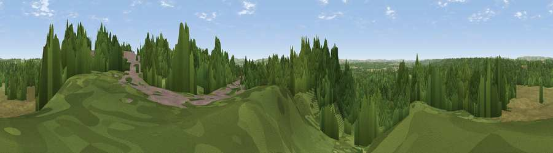

Viewpoint near Bovington
#32702 in England · top 69% of its area beats it · near BovingtonWhere it is
The exact computed spot (SY 82425 90975). Click the marker for map links.
The view, rendered

A 360° render of this exact spot computed from the terrain model, tree cover and land cover — summer colours, afternoon light, calibrated against photographs of famous viewpoints. Real trees, hedges and buildings will differ in detail.
The panorama
Grey silhouette: terrain skyline in each direction (720 bearings, Earth curvature and refraction included). Dashed green: skyline with trees (+15 m) and buildings (+8 m) as obstacles. Blue strip: how far the ground is visible on each bearing.
Where the view opens
Wedge length = distance to the farthest visible ground on that bearing (vegetation-aware). Rings at 10, 25 and 50 km.
What fills the view
67% woodland · 26% grassland · 4% cropland · 3% built-up
Angular shares of the visible panorama (visual magnitude), not map area. Landscape diversity 0.39 (0–1 Shannon).
Key numbers
More beautiful places nearby
The staircase of upgrades: each row has a higher view potential than everything closer. Driving times are estimates from straight-line distance, calibrated against real road routing — check an actual route before setting out.
| Place | Direction | Drive | Score |
|---|---|---|---|
| Viewpoint near Bovington | SSW · 1 km | ~3 min | 37.0 |
| Viewpoint near Bere Regis | N · 4 km | ~9 min | 37.5 |
| Viewpoint near Tincleton | WNW · 4 km | ~9 min | 51.9 |
| Viewpoint near Bere Regis | NE · 5 km | ~11 min | 56.1 |
| Chideock Down | SSW · 10 km | ~20 min | 83.5 |
| Viewpoint near Chaldon Herring | SSW · 11 km | ~20 min | 83.8 |
| Bindon Hill | S · 11 km | ~21 min | 84.5 |
| Rings Hill | SSE · 11 km | ~21 min | 87.5 |
50.71813, -2.25032 · source: screening · position refined by local search. Computed location — check access rights before visiting.